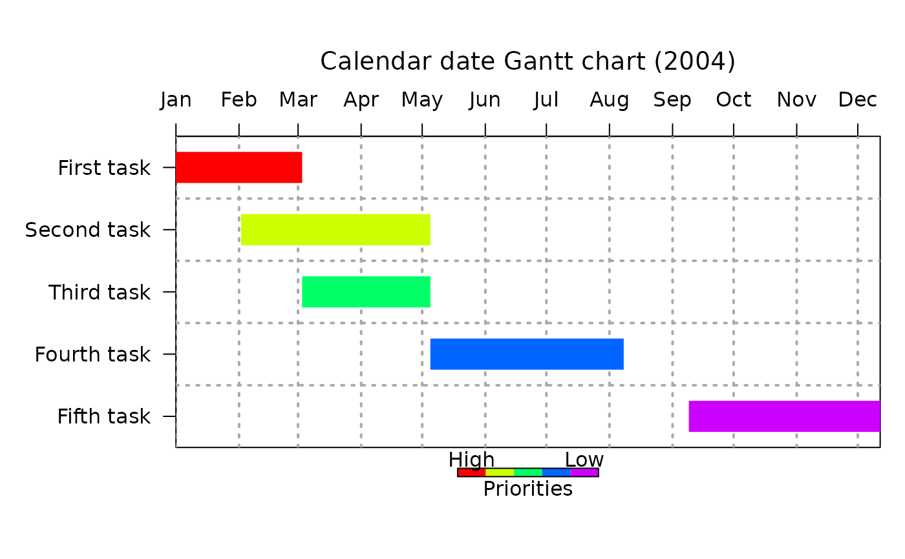
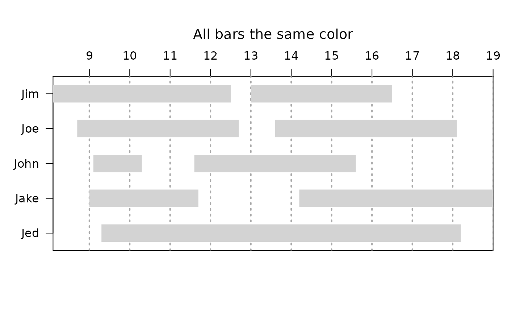
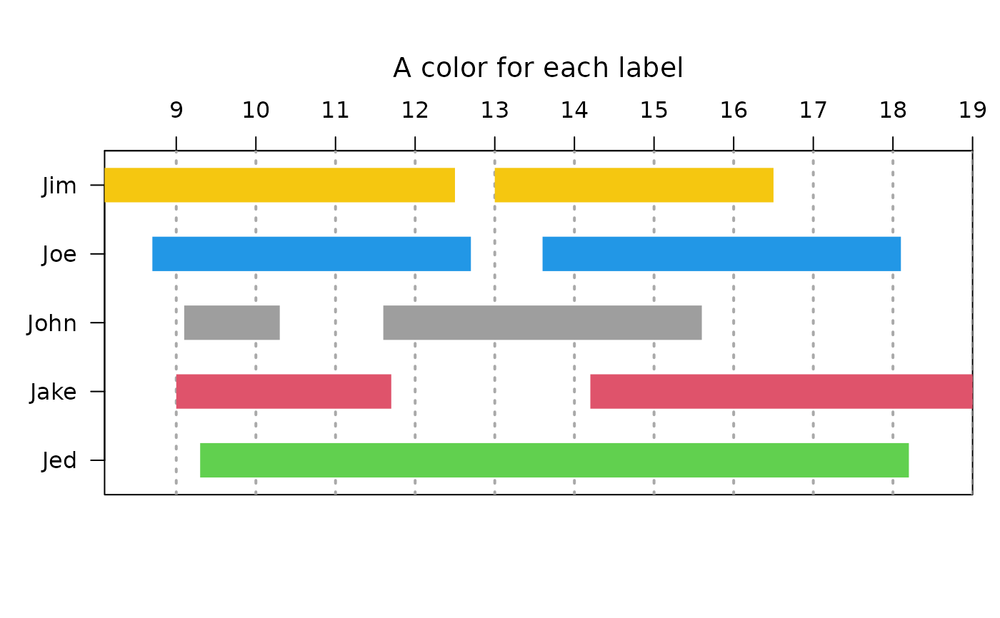
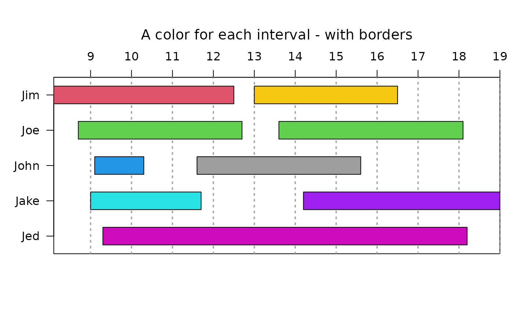

Display a Gantt chart
gantt.chart.RdDisplays a Gantt chart with priority coloring
Usage
gantt.chart(x=NULL,format="%Y/%m/%d",xlim=NULL,taskcolors=NULL,
priority.legend=FALSE,vgridpos=NULL,vgridlab=NULL,
vgrid.format="%Y/%m/%d",
half.height=0.25,hgrid=FALSE,main="",xlab="",cylindrical=FALSE,
label.cex=1,border.col=NA,priority.label="Priorities",
priority.extremes=c("High","Low"),time.axis=3)Arguments
- x
a list of task labels, start/end times and task priorities as returned by get.gantt.info. If this is not present, get.gantt.info will be called.
- format
the format to be used in entering dates/times (see strptime).
- xlim
the horizontal limits of the plot (see Details).
- taskcolors
a vector of colors used to illustrate task priority.
- priority.legend
Whether to display a priority color legend.
- vgridpos
optional positions of the vertical grid lines.
- vgridlab
optional labels for the vertical grid lines.
- vgrid.format
format for the vertical grid labels.
- half.height
the proportion of the spacing between task bars that will be filled by the bar on each side - 0.5 will leave no space.
- hgrid
logical - whether to display grid lines between the bars.
- main
the title of the plot - note that this is actually displayed using mtext.
- xlab
horizontal axis label - usually suppressed.
- cylindrical
Whether to give the bars a cylindrical appearance.
- label.cex
Relative size for the task labels at the left side.
- border.col
The color for an optional border for the bars (NA=none).
- priority.label
Label for the priority color legend.
- priority.extremes
Labels for each end of the priority color legend.
- time.axis
Where to place the time axis labels.
Value
The list used to create the chart - see get.gantt.info for details. This can be saved and reused rather than manually entering the information each time the chart is displayed.
Details
Because the "time" axis is calculated using POSIXct values, the values passed as xlim must also be POSIXct. See the second plot in the examples.
If task priority colors are not wanted, set taskcolors to a single value to suppress the coloring. If this is not done, rainbow will be called to generate a different color for each task. If colors other than rainbow are wanted, remember to pass enough colors for one to the lowest (highest numerically) priority.
There can now be more than one time interval for each task. If there is, more than one bar will be displayed for each interval, which may not be a task at all, but rather intervals related to the labels. Colors can be specified for labels or intervals and if there are not as many colors as intervals, the first "number of unique labels" colors will be assigned to each unique label. This should make every bar for each label the same color, but be aware that the colors will be distributed in alphabetical order of the entity labels. If there are at least as many taskcolors as intervals, they will be assigned to intervals in the order of the taskcolors vector. The examples should make this clearer.
Since gantt.chart can be used to display things other than prioritized tasks, the labels for the priority legend can now be specified.
Author
Jim Lemon (original by Scott Waichler - features by Ulrike Gromping - added label colors by Nicolas Immelman)
Examples
Ymd.format<-"%Y/%m/%d"
gantt.info<-list(labels=
c("First task","Second task","Third task","Fourth task","Fifth task"),
starts=
as.POSIXct(strptime(
c("2004/01/01","2004/02/02","2004/03/03","2004/05/05","2004/09/09"),
format=Ymd.format)),
ends=
as.POSIXct(strptime(
c("2004/03/03","2004/05/05","2004/05/05","2004/08/08","2004/12/12"),
format=Ymd.format)),
priorities=c(1,2,3,4,5))
vgridpos<-as.POSIXct(strptime(c("2004/01/01","2004/02/01","2004/03/01",
"2004/04/01","2004/05/01","2004/06/01","2004/07/01","2004/08/01",
"2004/09/01","2004/10/01","2004/11/01","2004/12/01"),format=Ymd.format))
vgridlab<-
c("Jan","Feb","Mar","Apr","May","Jun","Jul","Aug","Sep","Oct","Nov","Dec")
gantt.chart(gantt.info,main="Calendar date Gantt chart (2004)",
priority.legend=TRUE,vgridpos=vgridpos,vgridlab=vgridlab,hgrid=TRUE)

# add a little extra space on the right side
gantt.chart(gantt.info,main="Calendar date Gantt chart (2004)",
priority.legend=TRUE,vgridpos=vgridpos,vgridlab=vgridlab,hgrid=TRUE,
xlim=as.POSIXct(strptime(c("2004/01/01","2004/12/20"),
format=Ymd.format)))
# if both vgidpos and vgridlab are specified,
# starts and ends don't have to be dates
info2<-list(labels=c("Jim","Joe","Jim","John","John","Jake","Joe","Jed","Jake"),
starts=c(8.1,8.7,13.0,9.1,11.6,9.0,13.6,9.3,14.2),
ends=c(12.5,12.7,16.5,10.3,15.6,11.7,18.1,18.2,19.0))
gantt.chart(info2,vgridlab=8:19,vgridpos=8:19,
main="All bars the same color",taskcolors="lightgray")

gantt.chart(info2,vgridlab=8:19,vgridpos=8:19,
main="A color for each label",taskcolors=c(2,3,7,4,8))

gantt.chart(info2,vgridlab=8:19,vgridpos=8:19,
main="A color for each interval - with borders",
taskcolors=c(2,3,7,4,8,5,3,6,"purple"),border.col="black")
